Project Overview
TIM is a right-to-left, on-demand jobs marketplace that lets people hire vetted "Timos" for everyday tasks — dog-walking, handyman work, deliveries, even late-night grocery runs. Our three-person squad (PM + 2 UX/UI) had just two months to transform the founders' "time = money" vision into a launch-ready MVP, tackling trust, instant booking, and clear pay as core pain points.
Through 25+ rapid concept iterations, user research, IA planning, and usability tests, I led the end-to-end UX/UI effort — shaping a validated product concept, scalable design system, and developer-ready guidelines that set the stage for a higher job-fill rate and a 4.7-star App Store debut.
Problem Statement
Urban Israelis struggle to reclaim personal time because current gig apps are slow, unclear on pay, and feel risky, especially when a stranger must enter the home. Our challenge was to create a service that lets them turn time into money through instant, trustworthy bookings.
Key Challenges
Mind-set shift — selling "time = money"
Early concepts fell flat; 25 iterations before the right hook resonated.
Trust & safety
Users will only hire people they'd let into their homes or walk their pets.
Task diversity
Eight very different job categories (Pets, Indoor, Outdoor, etc.) had to feel coherent yet easy to filter.
RTL localisation
Hebrew layout and microcopy had to read naturally while preserving global patterns.
Compressed timeline
A two-month window demanded lean, evidence-driven decisions.
Design Process
I used the Design Thinking approach to solve the challenges we faced.
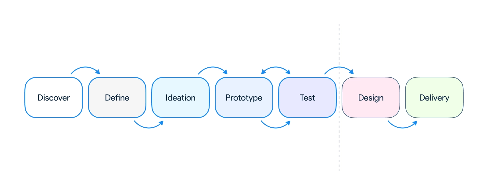
Discover Phase
- Conducted 10 seeker + 6 provider interviews
- Competitor teardown (TaskRabbit, local apps) to map gaps in booking speed & pay clarity
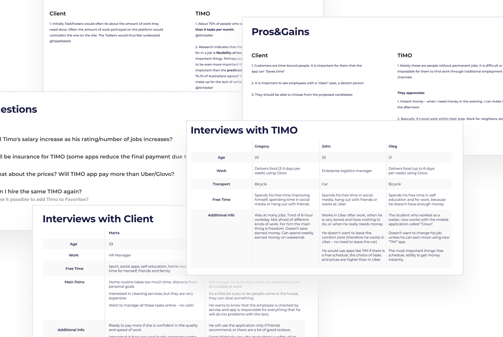
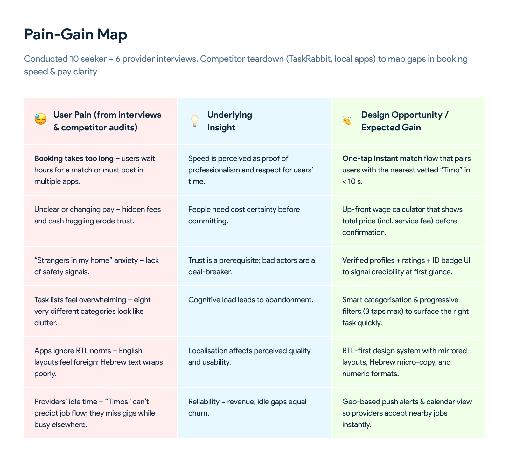
Define Phase
- Synthesised insights into a problem statement and three opportunity areas: instant match, transparent pay, trust signals
- Prioritised success metrics: posting time, task success rate, user trust score
- Created an information architecture (IA) for the key user flows
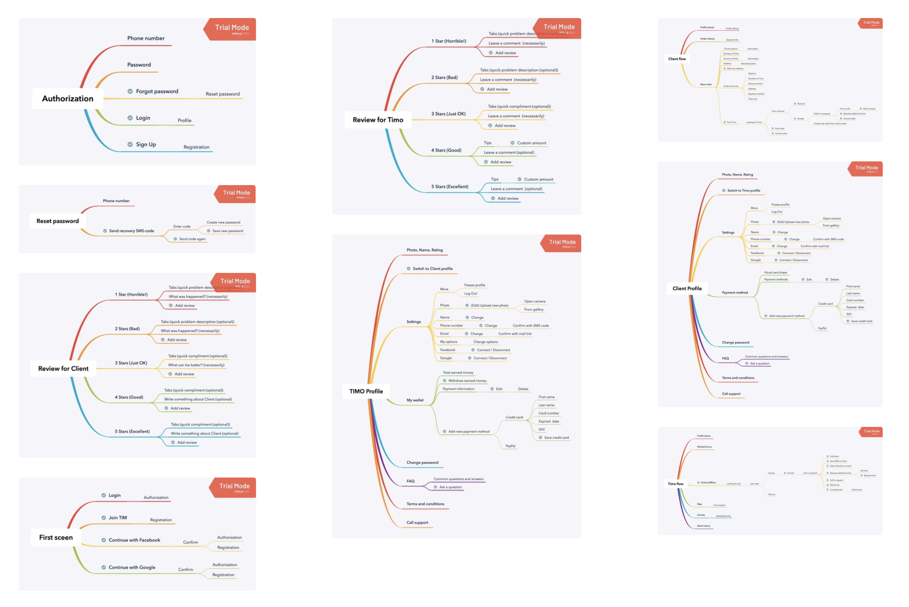
Ideation Phase
Ran crazy-8s and decision matrix workshops → 25 concepts → narrowed to 1 "perfect" concept after iterative user voting.
Concepts generated in ideation
Iterations in research loop 1
Iterations in research loop 2
Research loops with real users
Final "perfect" concept shipped
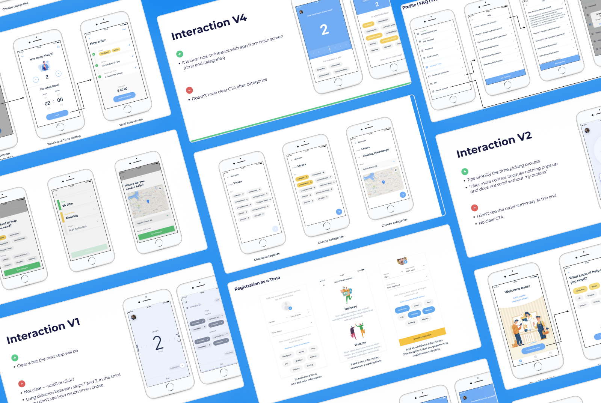
Prototype & Testing
We built high-fidelity Figma prototypes and tested them with clients and potential users. Each prototype featured different interactions, allowing us to gather insights that informed better design decisions and feature prioritization.
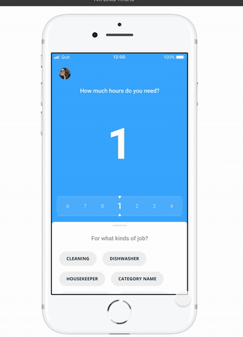
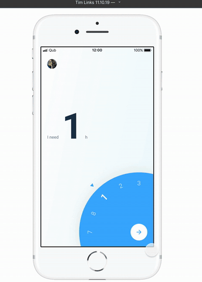
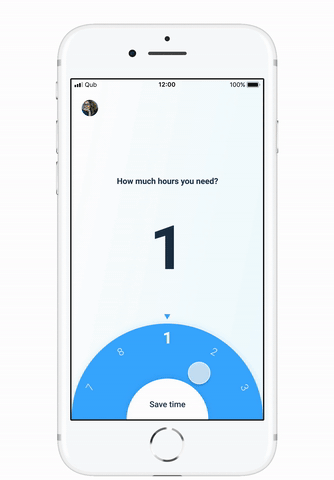
Design Phase
Crafted an RTL-ready lite design system (8-pt grid, tokens, light/dark themes). Delivered all assets, notes, and annotations to the client's development team. Designed high-fidelity screens with micro-interactions for booking, payment breakdown, and trust badges.
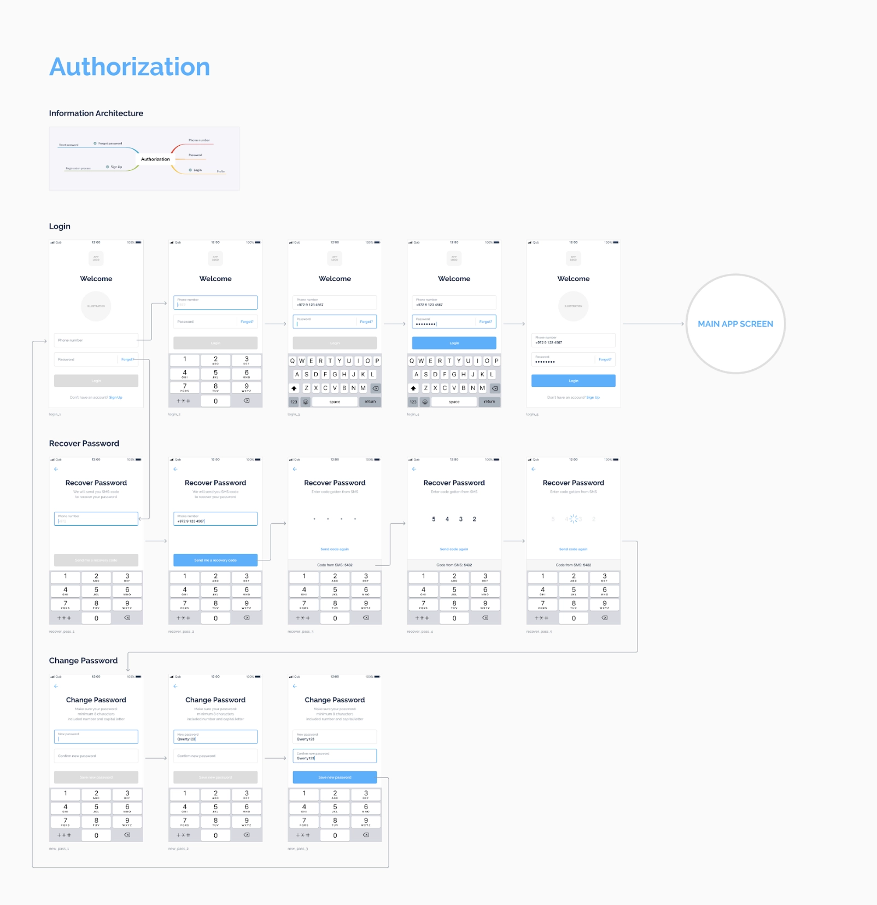
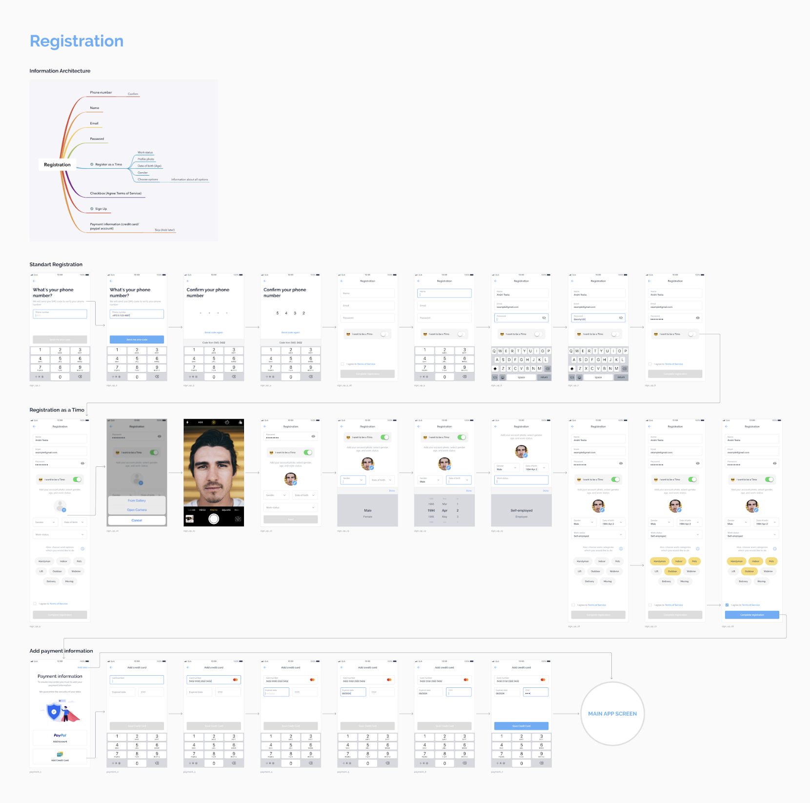
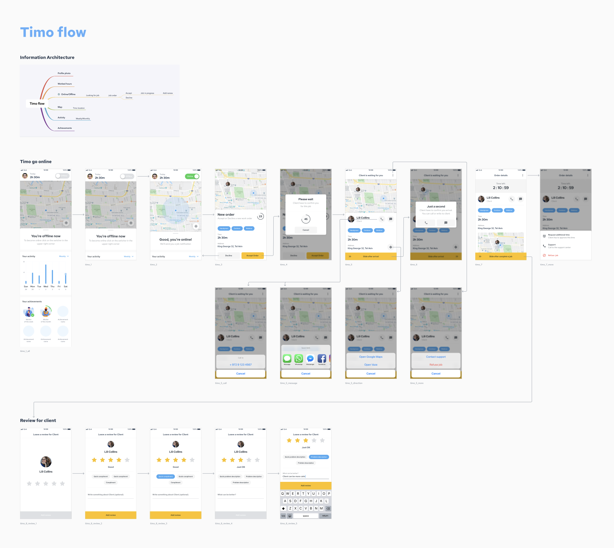
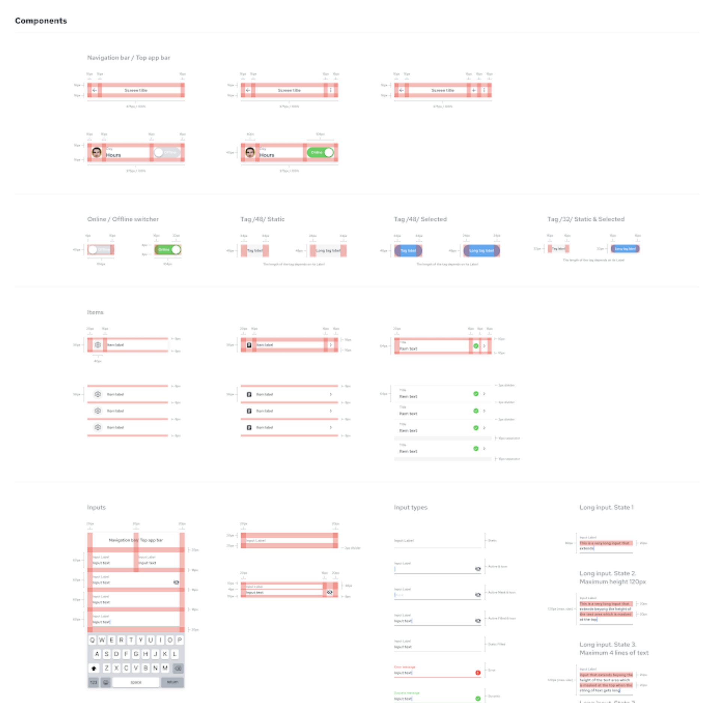
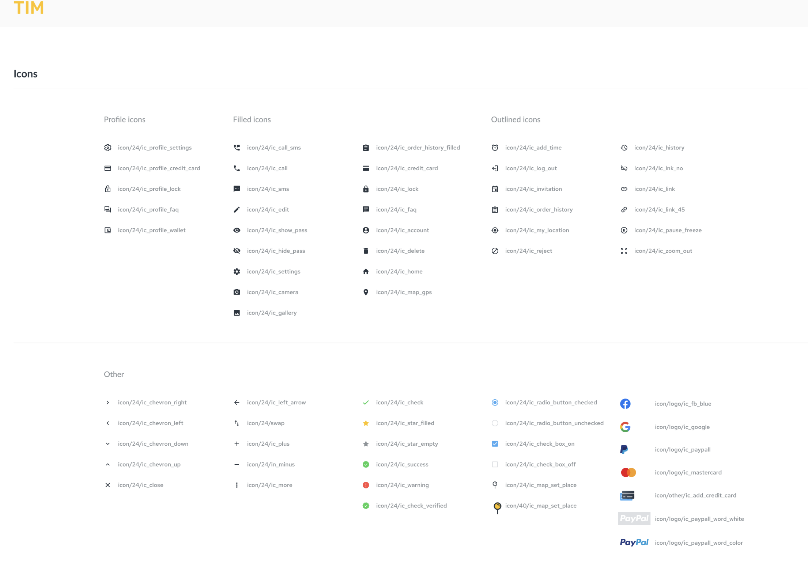
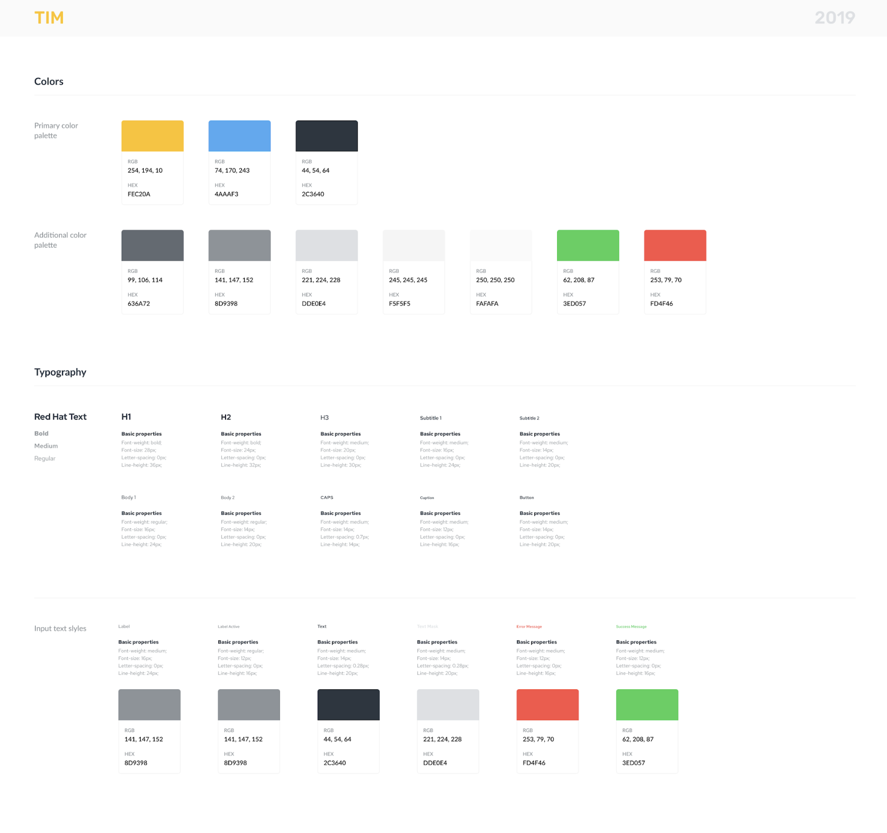
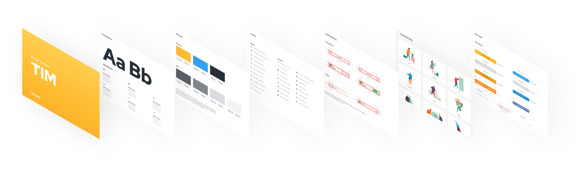
Final Result — A Polished, Ready-to-Ship Product
Task-success rate across all key flows in usability testing.
SUS = 85/100 · n = 15 (Maze + guerrilla)Average "create-order" flow cut — from ~3 min down to <1 min.
Measured via Maze internal testingApp Store debut rating, driven by intuitive onboarding and trust-first design.
Launch day · Israeli App StoreWhat was delivered
Created a design system
Delivered all assets, notes, and annotations to the client's development team. Designed high-fidelity screens with micro-interactions for booking, payment breakdown, and trust badges.
110+ hi-fi, RTL-ready mobile screens
Token-based mini design-system (8-pt grid, light/dark, JSON hand-off) · Annotated IA & user-flow specs.
1 "perfect" concept
25 design concepts explored → 1 "perfect" concept chosen after two research loops (15 + 10 iterations).
95% task-success rate
SUS = 85/100 · Average "create-order" flow cut ↓ 70% (≈3 min → <1 min) — Internal Maze & guerrilla tests, n = 15.
Mini design systems accelerate even MVPs
Tokens + RTL components cut dev time and future-proof scaling.
Investor demos
Founders successfully used the prototype in investor demos.
Next project
01 / 04 MedPal Back to all work